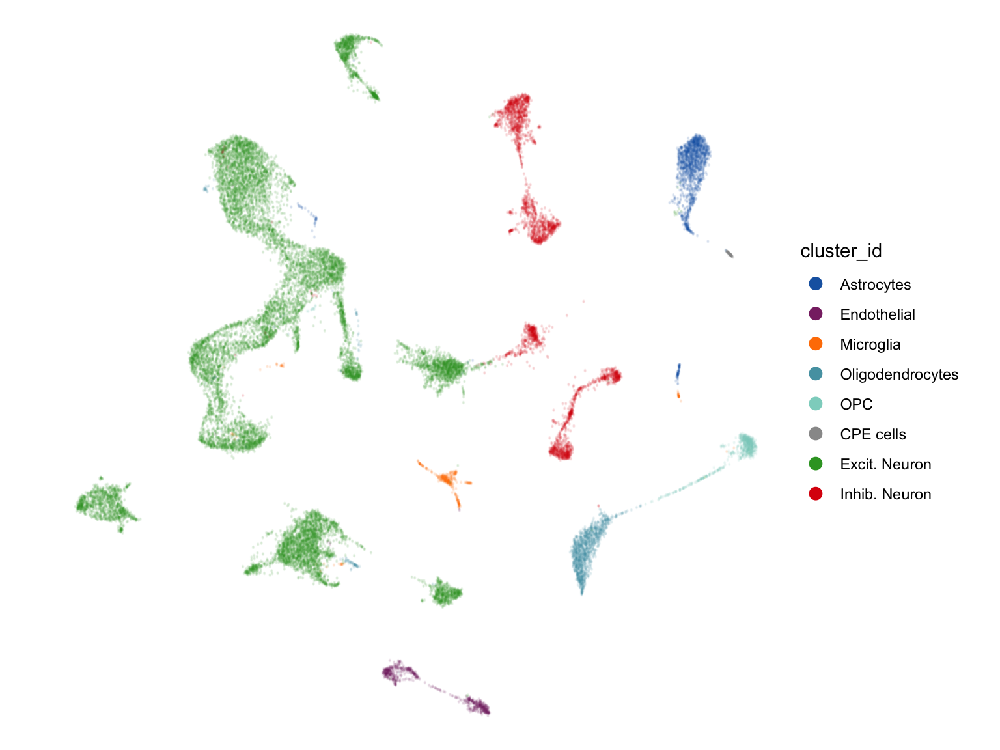
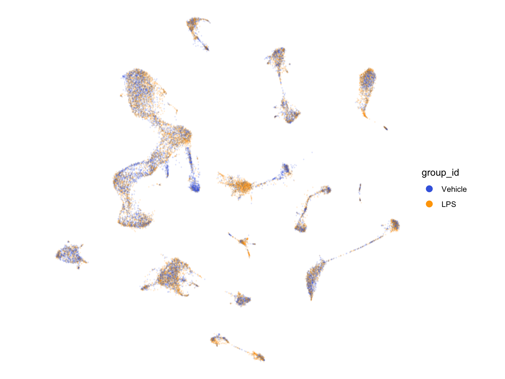
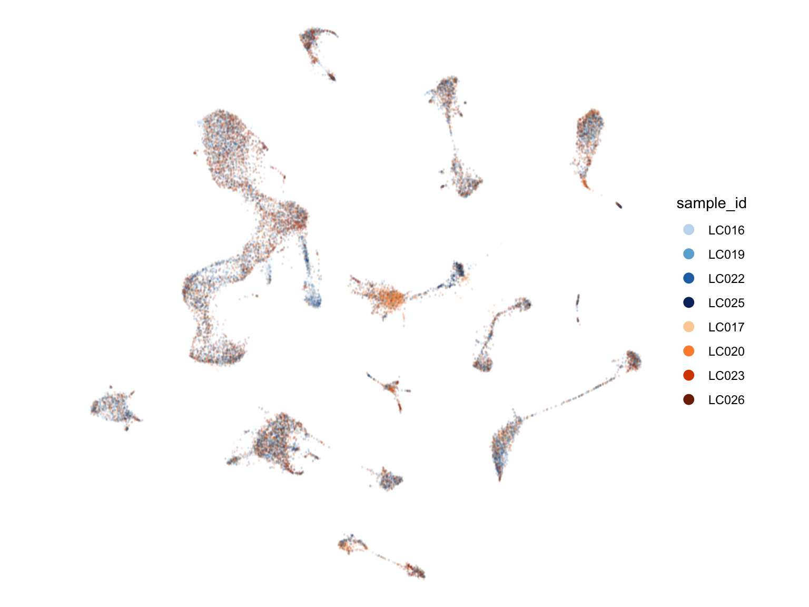
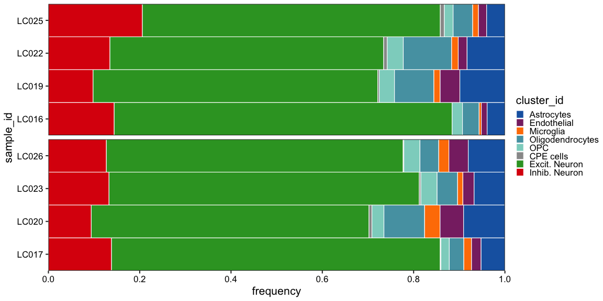
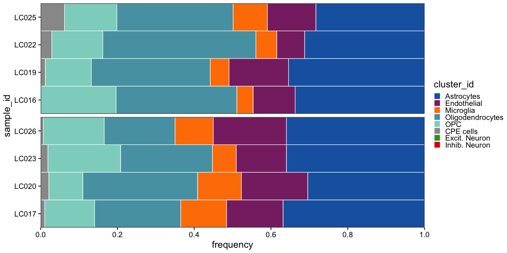
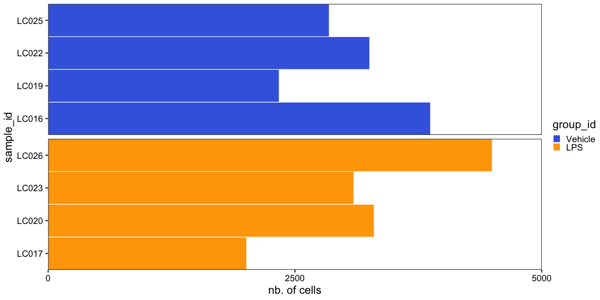
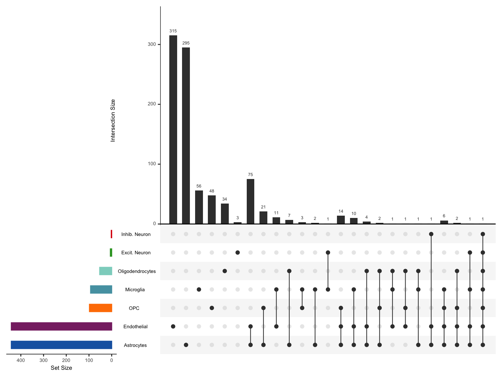
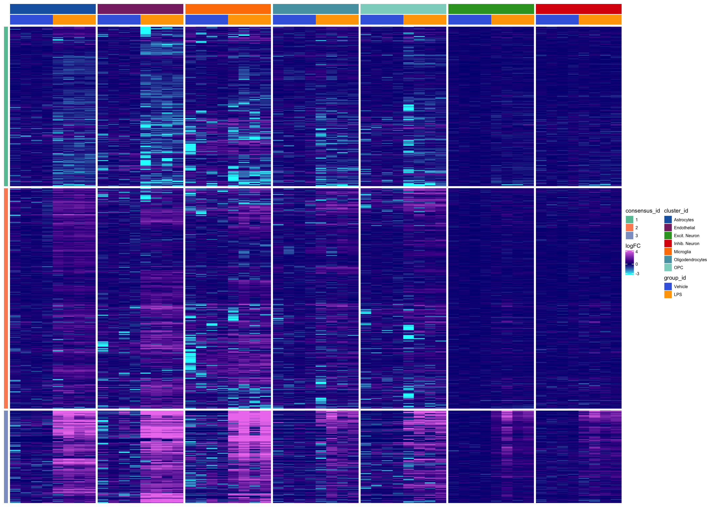
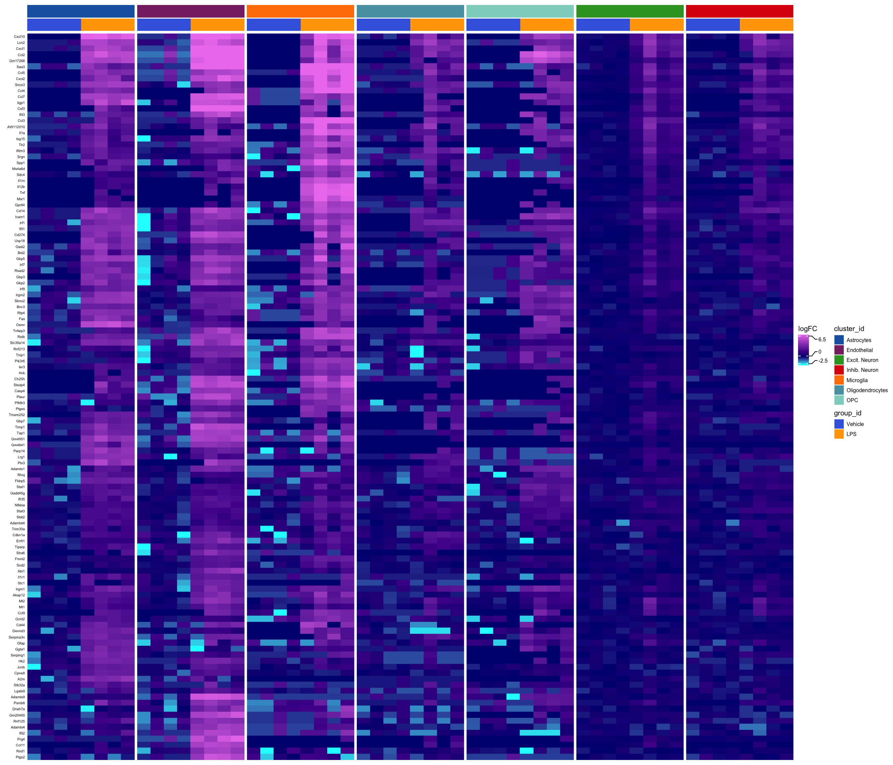
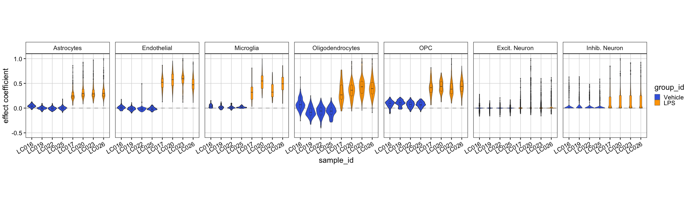

Last updated: 2020-03-31
Checks: 5 2
Knit directory: LPS/
This reproducible R Markdown analysis was created with workflowr (version 1.6.1). The Checks tab describes the reproducibility checks that were applied when the results were created. The Past versions tab lists the development history.
The R Markdown file has unstaged changes. To know which version of the R Markdown file created these results, you’ll want to first commit it to the Git repo. If you’re still working on the analysis, you can ignore this warning. When you’re finished, you can run wflow_publish to commit the R Markdown file and build the HTML.
Great job! The global environment was empty. Objects defined in the global environment can affect the analysis in your R Markdown file in unknown ways. For reproduciblity it’s best to always run the code in an empty environment.
The command set.seed(20190311) was run prior to running the code in the R Markdown file. Setting a seed ensures that any results that rely on randomness, e.g. subsampling or permutations, are reproducible.
Great job! Recording the operating system, R version, and package versions is critical for reproducibility.
To ensure reproducibility of the results, delete the cache directory 4-visualization_cache and re-run the analysis. To have workflowr automatically delete the cache directory prior to building the file, set delete_cache = TRUE when running wflow_build() or wflow_publish().
Great job! Using relative paths to the files within your workflowr project makes it easier to run your code on other machines.
Great! You are using Git for version control. Tracking code development and connecting the code version to the results is critical for reproducibility.
The results in this page were generated with repository version bebad71. See the Past versions tab to see a history of the changes made to the R Markdown and HTML files.
Note that you need to be careful to ensure that all relevant files for the analysis have been committed to Git prior to generating the results (you can use wflow_publish or wflow_git_commit). workflowr only checks the R Markdown file, but you know if there are other scripts or data files that it depends on. Below is the status of the Git repository when the results were generated:
Ignored files:
Ignored: .DS_Store
Ignored: .snakemake/
Ignored: LPS/.DS_Store
Ignored: LPS/analysis/.DS_Store
Ignored: LPS/analysis/0-preprocessing_cache/
Ignored: LPS/analysis/1-clustering_cache/
Ignored: LPS/analysis/2-annotation_cache/
Ignored: LPS/analysis/3-differential_cache/
Ignored: LPS/analysis/4-visualization_cache/
Ignored: LPS/analysis/5-geneset_cache/
Ignored: LPS/code/.DS_Store
Ignored: LPS/data/
Ignored: LPS/figures/
Ignored: LPS/output/.DS_Store
Ignored: LPS/output/DS_results_AD-gid.logcounts.rds
Ignored: LPS/output/DS_results_AD-gid.vstresiduals.rds
Ignored: LPS/output/DS_results_AD-sid.logcounts.rds
Ignored: LPS/output/DS_results_AD-sid.vstresiduals.rds
Ignored: LPS/output/DS_results_MAST.logcounts.rds
Ignored: LPS/output/DS_results_MM-dream.rds
Ignored: LPS/output/DS_results_MM-dream2.rds
Ignored: LPS/output/DS_results_MM-nbinom.rds
Ignored: LPS/output/DS_results_MM-vst.rds
Ignored: LPS/output/DS_results_edgeR.sum.counts.rds
Ignored: LPS/output/DS_results_edgeR.sum.scalecpm.rds
Ignored: LPS/output/DS_results_limma-trend.mean.logcounts.rds
Ignored: LPS/output/DS_results_limma-trend.mean.vstresiduals.rds
Ignored: LPS/output/DS_results_limma-voom.sum.counts.rds
Ignored: LPS/output/DS_results_pb.csv
Ignored: LPS/output/DS_results_scDD.logcounts.rds
Ignored: LPS/output/DS_results_scDD.vstresiduals.rds
Ignored: LPS/output/GSEA_data.rds
Ignored: LPS/output/GSEA_df.rds
Ignored: LPS/output/GSEA_results.csv
Ignored: LPS/output/SCE_annotation.rds
Ignored: LPS/output/SCE_preprocessing.rds
Ignored: LPS/output/SO_clustering.rds
Ignored: LPS/output/logFCs_by_cluster-sample.rds
Ignored: LPS/output/topGO_ccid3.csv
Ignored: data/
Ignored: figures/.DS_Store
Ignored: figures/kang-perf_by_cat.pdf
Ignored: figures/kang-perf_combined.pdf
Ignored: figures/magl-perf_by_cat.pdf
Ignored: figures/null.pdf
Ignored: figures/pb_mean_disp.pdf
Ignored: figures/perf_by_es.pdf
Ignored: figures/perf_by_gs.pdf
Ignored: figures/perf_by_ss.pdf
Ignored: figures/sim_pars.pdf
Ignored: figures/sim_vs_est_lfc.pdf
Ignored: figures/summary_heatmap.pdf
Ignored: meta/
Ignored: plots/
Ignored: results/
Ignored: scripts/.DS_Store
Ignored: scripts/.drake/config/
Ignored: scripts/.drake/data/
Ignored: scripts/.drake/drake/
Ignored: scripts/.drake/keys/
Ignored: scripts/.drake/scratch/
Untracked files:
Untracked: LPS/workflowr.Rproj
Untracked: README.html
Untracked: figures/figures/
Untracked: logs/
Untracked: session_info.txt
Untracked: setup.Rout
Unstaged changes:
Modified: .Renviron
Modified: LPS/.gitignore
Modified: LPS/analysis/0-preprocessing.Rmd
Modified: LPS/analysis/1-clustering.Rmd
Modified: LPS/analysis/2-annotation.Rmd
Modified: LPS/analysis/3-differential.Rmd
Modified: LPS/analysis/4-visualization.Rmd
Modified: LPS/analysis/5-geneset.Rmd
Deleted: LPS/analysis/6-more.Rmd
Modified: LPS/analysis/_site.yml
Modified: LPS/analysis/index.Rmd
Modified: LPS/code/utils.R
Modified: README.md
Modified: Snakefile
Modified: figures/fig_sim_pars.R
Modified: figures/fig_summary.R
Note that any generated files, e.g. HTML, png, CSS, etc., are not included in this status report because it is ok for generated content to have uncommitted changes.
These are the previous versions of the repository in which changes were made to the R Markdown (LPS/analysis/4-visualization.Rmd) and HTML (LPS/docs/4-visualization.html) files. If you’ve configured a remote Git repository (see ?wflow_git_remote), click on the hyperlinks in the table below to view the files as they were in that past version.
| File | Version | Author | Date | Message |
|---|---|---|---|---|
| Rmd | a38f6f0 | HelenaLC | 2019-08-13 | bioc3.10 rerun |
| html | a38f6f0 | HelenaLC | 2019-08-13 | bioc3.10 rerun |
| Rmd | 7189a88 | HelenaLC | 2019-08-13 | bioc3.10 rerun |
| html | 7189a88 | HelenaLC | 2019-08-13 | bioc3.10 rerun |
library(data.table)
library(dplyr)
library(edgeR)
library(M3C)
library(magrittr)
library(muscat)
library(purrr)
library(org.Mm.eg.db)
library(scater)
library(topGO)
library(UpSetR)# load data & source utilities
sce <- readRDS(file.path("output", "SCE_annotation.rds"))
source(file.path("code", "utils.R"))# for ea. cluster, sample equal group sizes
cs <- split(setDT(cd_df),
by = c("cluster_id", "group_id"),
flatten = FALSE, sorted = TRUE) %>%
map_depth(2, "cell_id") %>%
map_depth(1, function(u)
lapply(u, sample, min(sapply(u, length))))
cs <- unname(unlist(cs))
df <- cd_df[sample(cs, length(cs)), ] # randomize rows
# plot UMAP colored by cluster, sample & group ID
for (id in ids) {
cat("## ", id, "\n")
print(.plot_dr(df, id, get(paste0(id, "_pal"))))
cat("\n\n")
}


thm <- function(pal, p) p +
facet_wrap("group_id", ncol = 1, scales = "free_y") +
geom_bar(stat = "identity", col = "white", width = 1, size = 0.2) +
scale_fill_manual(values = pal) + scale_x_discrete(expand = c(0, 0)) +
.prettify("bw") + coord_flip() + theme(aspect.ratio = NULL,
panel.grid = element_blank(), panel.spacing = unit(1, "mm"),
strip.text = element_blank(), strip.background = element_blank())
# cluster frequencies by sample
fqs <- prop.table(table(sce$cluster_id, sce$sample_id), 2)
df <- set_colnames(reshape2::melt(fqs), c("cluster_id", "sample_id", "frequency"))
df$group_id <- sce$group_id[match(df$sample_id, sce$sample_id)]
(p1 <- thm(cluster_id_pal, ggplot(df,
aes(x = sample_id, y = frequency, fill = cluster_id)) +
scale_y_continuous(breaks = seq(0, 1, 0.2), expand = c(0,0))))
# excluding neuronal subpopulations
sub <- sce[, !sce$cluster_id %in% c("Excit. Neuron", "Inhib. Neuron")]
fqs <- prop.table(table(sub$cluster_id, sub$sample_id), 2)
df <- set_colnames(reshape2::melt(fqs), c("cluster_id", "sample_id", "frequency"))
df$group_id <- sub$group_id[match(df$sample_id, sub$sample_id)]
(p2 <- thm(cluster_id_pal, ggplot(df,
aes(x = sample_id, y = frequency, fill = cluster_id)) +
scale_y_continuous(breaks = seq(0, 1, 0.2), expand = c(0,0))))
# cell counts by sample
df <- set_colnames(reshape2::melt(table(sce$sample_id)), c("sample_id", "n_cells"))
df$group_id <- sce$group_id[match(df$sample_id, sce$sample_id)]
(p3 <- thm(group_id_pal, ggplot(df,
aes(x = sample_id, y = n_cells, fill = group_id)) +
scale_y_continuous("nb. of cells", limits = c(0, 5e3),
breaks = seq(0, 5e3, 2500), expand = c(0,0))))
To get a general overview of the differential testing results, we first filter them to retain hits with \(\text{FDR}<5\%\) and \(~|~logFC~|~>1\), and view the number & percentage of differential findings by cluster. Finally, we extract the top hits (lowest adj. p-value) in each cluster.
# compute pseudobulks (sum of counts) by cluster-sample & run DS analysis
pbs <- aggregateData(sce[, sce$cluster_id != "CPE cells"])
res <- pbDS(pbs, method = "edgeR", filter = "genes", verbose = FALSE)$table$LPS
# filter abs(logFC) > 1 & FDR < 0.05,
# sort by FDR & extract DS genes for ea. cluster
res_fil <- .get_ds_gs(res, fdr = 0.05, lfc = 1)
ds_gs_by_k <- map(res_fil, "gene")
# nb. & % of hits by cluster
n_de <- vapply(ds_gs_by_k, length, numeric(1))
cbind(n_de, perc = round(n_de / nrow(sce) * 100, 2)) n_de perc
Astrocytes 442 3.99
Endothelial 442 3.99
Microglia 93 0.84
Oligodendrocytes 53 0.48
OPC 98 0.88
Excit. Neuron 6 0.05
Inhib. Neuron 2 0.02(upset <- upset(fromList(ds_gs_by_k), nintersects = 100,
sets = names(ds_gs_by_k), sets.bar.color = cluster_id_pal[names(ds_gs_by_k)],
mb.ratio = c(0.6, 0.4), text.scale = 0.8, point.size = 2, line.size = 0.4))
quartz_off_screen
2 # construct SCE containing logFCs for ea. cluster
ref <- pbs$group_id == "Vehicle"
lfc <- lapply(assays(pbs), function(u) {
y <- DGEList(u)
y <- calcNormFactors(y)
lcpm <- log1p(cpm.DGEList(y))
lfc <- lcpm - rowMeans(lcpm[, ref])
SingleCellExperiment(lfc,
colData = colData(pbs),
rowData = rowData(sce))
}) %>% do.call(what = cbind)
lfc$cluster_id <- factor(
rep(assayNames(pbs), each = ns),
levels = assayNames(pbs))
# consensus clustering of DS genes
ds_gs <- unique(unlist(ds_gs_by_k))
cc <- M3C(t(assay(lfc[ds_gs, ])), method = 2,
seed = NULL, removeplots = TRUE)
cc_ids <- cc$realdataresults[[3]]$assignments
cc_cols <- brewer.pal(length(unique(cc_ids)), "Set2")
names(cc_cols) <- unique(cc_ids)
# column & row annoations
col_df <- data.frame(
cluster_id = rep(assayNames(pbs), each = ns),
group_id = rep(pbs$group_id, length(assays(pbs))))
col_cols <- sapply(ids, function(id) get(paste0(id, "_pal")))
col_anno <- HeatmapAnnotation(
df = col_df, col = col_cols,
show_annotation_name = FALSE,
annotation_legend_param = .hm_lgd_aes)
row_anno <- rowAnnotation(
show_annotation_name = FALSE,
df = data.frame(consensus_id = cc_ids),
col = list(consensus_id = cc_cols),
simple_anno_size = unit(2, "mm"),
annotation_legend_param = .hm_lgd_aes)
qs <- quantile(assay(lfc[ds_gs, ]), c(0.01, 0.99))
brks <- .get_brks(qs, 0.5)
cols <- colorRamp2(brks, .hm_cols)
(hm <- .plot_hm(lfc[ds_gs, ], cols, brks,
col_anno, row_anno, cc_ids, row_title = NULL,
cluster_row_slices = FALSE, cluster_column_slices = FALSE,
use_raster = TRUE, raster_device = "CairoPNG"))
# subset genes w/ consensus clustering ID 3
# & more stringent filtering for 0.001% FDR
gs <- intersect(
names(which(cc_ids == 3)),
.get_ds_gs(res, fdr = 1e-4, lfc = 1, simplify = TRUE))
qs <- quantile(assay(lfc[gs, ]), c(0.01, 0.99))
brks <- .get_brks(qs, 0.5)
cols <- colorRamp2(brks, .hm_cols)
tmp <- lfc[gs, ]
rownames(tmp) <- gsub(".*[.]{1}", "", rownames(tmp))
(hm <- .plot_hm(tmp, cols, brks,
col_anno, row_title = NULL, row_nms = TRUE,
cluster_row_slices = FALSE, cluster_column_slices = FALSE,
row_names_gp = gpar(fontsize = 4),
column_title_gp = gpar(fontsize = 8),
use_raster = TRUE, raster_device = "CairoPNG"))
Loading required namespace: Cairocs_by_k <- split(colnames(sce), sce$cluster_id)[assayNames(pbs)]
ld <- lapply(assayNames(pbs), function(k) {
# subset SCE to include only
# DS genes & cells in cluster k
gs <- ds_gs_by_k[[k]]
cs <- cs_by_k[[k]]
if (length(gs) == 0 | length(cs) == 0)
return(NULL)
es <- logcounts(sce[gs, cs])
# decompose values as a linear combination of the group's logFCs
ld <- t(es) %*% pull(filter(res[[k]], gene %in% gs), "logFC")
# assure values are comparable across clusters
ld[, 1] / max(ld)
})
rmv <- vapply(ld, is.null, logical(1))
ld <- set_names(unlist(ld[!rmv]), unlist(cs_by_k[!rmv]))
cd_df[names(ld), "ld"] <- ld
# violins by cluster-sample
(p <- ggplot(filter(cd_df, !is.na(ld)),
aes(x = sample_id, y = ld, fill = group_id)) +
facet_wrap("cluster_id", nrow = 1) +
geom_hline(yintercept = 0, size = 0.1, lty = 2) +
scale_fill_manual(values = group_id_pal) +
geom_violin(size = 0.1, width = 1) +
geom_boxplot(size = 0.1, width = 0.2, show.legend = FALSE,
outlier.shape = 16, outlier.size = 0.1) +
scale_y_continuous(limits = c(-0.6, 1.1), breaks = seq(-0.5,1,0.5), expand = c(0,0)) +
ylab("effect coefficient") + .prettify("bw") + theme(
aspect.ratio = 1, panel.spacing = unit(2, "mm"),
axis.text.x = element_text(angle = 30, hjust = 1, vjust = 1)))
Scale for 'y' is already present. Adding another scale for 'y', which will replace the existing
scale.go <- lapply(split(names(cc_ids), cc_ids), function(gs) {
ss1 <- strsplit(gs, ".", fixed = TRUE)
ss2 <- strsplit(rownames(sce), ".", fixed = TRUE)
fs1 <- unique(sapply(ss1, .subset, 2))
fs2 <- sapply(ss2, .subset, 2)
l <- as.numeric(fs2 %in% fs1)
names(l) <- fs2
go <- new("topGOdata",
nodeSize = 20,
ontology = "BP",
allGenes = l,
geneSel = function(u) u == 1,
annot = annFUN.org,
mapping = "org.Mm.eg.db",
ID = "symbol")
res <- runTest(go, algorithm = "classic", statistic = "fisher")
GenTable(go, classicFisher = res, orderBy = "classicFisher", topNodes = 100)
})
# view top 10 GO terms per consensus ID
lapply(go, head, 10)$`1`
GO.ID Term Annotated Significant Expected classicFisher
1 GO:0048731 system development 2731 119 77.20 3.7e-08
2 GO:0015711 organic anion transport 224 23 6.33 8.1e-08
3 GO:0048856 anatomical structure development 3276 133 92.61 2.7e-07
4 GO:0006820 anion transport 298 26 8.42 3.0e-07
5 GO:0007275 multicellular organism development 3034 125 85.77 3.9e-07
6 GO:0046942 carboxylic acid transport 164 18 4.64 8.2e-07
7 GO:0015849 organic acid transport 165 18 4.66 9.0e-07
8 GO:0032502 developmental process 3478 136 98.32 1.8e-06
9 GO:0032501 multicellular organismal process 3774 143 106.69 5.2e-06
10 GO:0007519 skeletal muscle tissue development 100 12 2.83 2.4e-05
$`2`
GO.ID Term Annotated Significant Expected classicFisher
1 GO:0040011 locomotion 1113 96 44.61 8.5e-14
2 GO:0002376 immune system process 1161 98 46.53 1.7e-13
3 GO:0016477 cell migration 904 83 36.23 2.2e-13
4 GO:0050896 response to stimulus 4253 241 170.46 2.9e-13
5 GO:0048870 cell motility 972 84 38.96 4.3e-12
6 GO:0051674 localization of cell 972 84 38.96 4.3e-12
7 GO:0008283 cell proliferation 1102 89 44.17 3.5e-11
8 GO:0007155 cell adhesion 725 67 29.06 5.4e-11
9 GO:0040012 regulation of locomotion 644 62 25.81 5.9e-11
10 GO:0022610 biological adhesion 730 67 29.26 7.4e-11
$`3`
GO.ID Term Annotated Significant Expected classicFisher
1 GO:0006952 defense response 657 89 11.08 < 1e-30
2 GO:0006955 immune response 597 79 10.07 < 1e-30
3 GO:0051707 response to other organism 386 67 6.51 < 1e-30
4 GO:0043207 response to external biotic stimulus 387 67 6.52 < 1e-30
5 GO:0009607 response to biotic stimulus 405 67 6.83 < 1e-30
6 GO:0002376 immune system process 1161 96 19.57 < 1e-30
7 GO:0034097 response to cytokine 464 66 7.82 < 1e-30
8 GO:0009605 response to external stimulus 1136 92 19.15 < 1e-30
9 GO:0045087 innate immune response 308 56 5.19 < 1e-30
10 GO:0006950 response to stress 1928 113 32.51 < 1e-30The scater packages provides a variety of visualizations for single-cell data. Here, we use plotExpression to render violin plots of the top differential genes identified for each cluster. We specify x = "sample_id" to obtain one violin per sample, and colour_by = "group_id" to signify the experimental condition each sample belongs to.
# split cells by cluster
cs_by_k <- split(colnames(sce), sce$cluster_id)
# get top hits for ea. cluster
n <- 8
top_gs <- lapply(res_fil, function(u) {
n <- ifelse(nrow(u) < n, nrow(u), n)
arrange(u, p_adj.loc) %>%
dplyr::slice(seq_len(n)) %>%
pull("gene")
})
for (k in assayNames(pbs)) {
cat("## ", k, "\n")
if (length(top_gs[[k]]) != 0)
print(plotExpression(
sce[, cs_by_k[[k]]], features = top_gs[[k]],
x = "sample_id", colour_by = "group_id") +
guides(fill = guide_legend(override.aes = list(size = 2, alpha = 1))) +
theme_classic() + theme(axis.text.x = element_text(angle = 45, hjust = 1, vjust = 1)))
cat("\n\n")
}write.csv(head(go$`3`, 100), file.path("output", "topGO_ccid3.csv"))
saveRDS(lfc, file.path("output", "logFCs_by_cluster-sample.rds"))
sessionInfo()R version 3.6.2 (2019-12-12)
Platform: x86_64-apple-darwin15.6.0 (64-bit)
Running under: macOS Catalina 10.15.3
Matrix products: default
BLAS: /Library/Frameworks/R.framework/Versions/3.6/Resources/lib/libRblas.0.dylib
LAPACK: /Library/Frameworks/R.framework/Versions/3.6/Resources/lib/libRlapack.dylib
locale:
[1] en_US.UTF-8/en_US.UTF-8/en_US.UTF-8/C/en_US.UTF-8/en_US.UTF-8
attached base packages:
[1] grid stats4 parallel stats graphics grDevices utils datasets methods
[10] base
other attached packages:
[1] purrr_0.3.3 RColorBrewer_1.1-2 ggrastr_0.1.7
[4] cowplot_1.0.0 ComplexHeatmap_2.2.0 circlize_0.4.8
[7] UpSetR_1.4.0 topGO_2.38.1 SparseM_1.78
[10] GO.db_3.10.0 graph_1.64.0 org.Mm.eg.db_3.10.0
[13] AnnotationDbi_1.48.0 muscat_1.2.0 scater_1.14.6
[16] ggplot2_3.2.1 SingleCellExperiment_1.8.0 SummarizedExperiment_1.16.1
[19] DelayedArray_0.12.2 BiocParallel_1.20.1 matrixStats_0.55.0
[22] GenomicRanges_1.38.0 GenomeInfoDb_1.22.0 IRanges_2.20.2
[25] S4Vectors_0.24.3 magrittr_1.5 M3C_1.8.0
[28] Biobase_2.46.0 BiocGenerics_0.32.0 edgeR_3.28.0
[31] limma_3.42.2 dplyr_0.8.4 data.table_1.12.8
loaded via a namespace (and not attached):
[1] tidyselect_1.0.0 lme4_1.1-21 RSQLite_2.2.0
[4] htmlwidgets_1.5.1 Rtsne_0.15 munsell_0.5.0
[7] codetools_0.2-16 future_1.16.0 withr_2.1.2
[10] colorspace_1.4-1 knitr_1.28 rstudioapi_0.11
[13] listenv_0.8.0 NMF_0.22.0 labeling_0.3
[16] git2r_0.26.1 sigclust_1.1.0 GenomeInfoDbData_1.2.2
[19] farver_2.0.3 bit64_0.9-7 glmmTMB_1.0.0
[22] rprojroot_1.3-2 vctrs_0.2.2 xfun_0.12
[25] R6_2.4.1 doParallel_1.0.15 ggbeeswarm_0.6.0
[28] clue_0.3-57 rsvd_1.0.3 locfit_1.5-9.1
[31] bitops_1.0-6 assertthat_0.2.1 promises_1.1.0
[34] scales_1.1.0 nnet_7.3-12 beeswarm_0.2.3
[37] gtable_0.3.0 globals_0.12.5 workflowr_1.6.0
[40] rlang_0.4.4 genefilter_1.68.0 GlobalOptions_0.1.1
[43] splines_3.6.2 TMB_1.7.16 lazyeval_0.2.2
[46] acepack_1.4.1 checkmate_2.0.0 BiocManager_1.30.10
[49] yaml_2.2.1 reshape2_1.4.3 backports_1.1.5
[52] httpuv_1.5.2 Hmisc_4.3-1 tools_3.6.2
[55] gridBase_0.4-7 gplots_3.0.1.2 Rcpp_1.0.3
[58] plyr_1.8.5 base64enc_0.1-3 progress_1.2.2
[61] zlibbioc_1.32.0 RCurl_1.98-1.1 prettyunits_1.1.1
[64] rpart_4.1-15 GetoptLong_0.1.8 viridis_0.5.1
[67] cluster_2.1.0 colorRamps_2.3 fs_1.3.1
[70] variancePartition_1.16.1 lmerTest_3.1-1 matrixcalc_1.0-3
[73] whisker_0.4 hms_0.5.3 evaluate_0.14
[76] xtable_1.8-4 pbkrtest_0.4-7 XML_3.99-0.3
[79] jpeg_0.1-8.1 gridExtra_2.3 shape_1.4.4
[82] compiler_3.6.2 tibble_2.1.3 KernSmooth_2.23-16
[85] crayon_1.3.4 minqa_1.2.4 htmltools_0.4.0
[88] corpcor_1.6.9 later_1.0.0 Formula_1.2-3
[91] snow_0.4-3 geneplotter_1.64.0 DBI_1.1.0
[94] MASS_7.3-51.5 boot_1.3-24 BiocStyle_2.14.4
[97] Matrix_1.2-18 gdata_2.18.0 pkgconfig_2.0.3
[100] registry_0.5-1 numDeriv_2016.8-1.1 foreign_0.8-75
[103] foreach_1.4.8 annotate_1.64.0 vipor_0.4.5
[106] rngtools_1.5 blme_1.0-4 pkgmaker_0.31
[109] XVector_0.26.0 bibtex_0.4.2.2 stringr_1.4.0
[112] digest_0.6.24 sctransform_0.2.1 rmarkdown_2.1
[115] htmlTable_1.13.3 dendextend_1.13.3 DelayedMatrixStats_1.8.0
[118] gtools_3.8.1 rjson_0.2.20 nloptr_1.2.1
[121] lifecycle_0.1.0 nlme_3.1-144 BiocNeighbors_1.4.1
[124] viridisLite_0.3.0 pillar_1.4.3 lattice_0.20-40
[127] survival_3.1-8 glue_1.3.1 png_0.1-7
[130] iterators_1.0.12 bit_1.1-15.2 stringi_1.4.6
[133] blob_1.2.1 DESeq2_1.26.0 BiocSingular_1.2.2
[136] doSNOW_1.0.18 latticeExtra_0.6-29 caTools_1.18.0
[139] memoise_1.1.0 irlba_2.3.3 future.apply_1.4.0